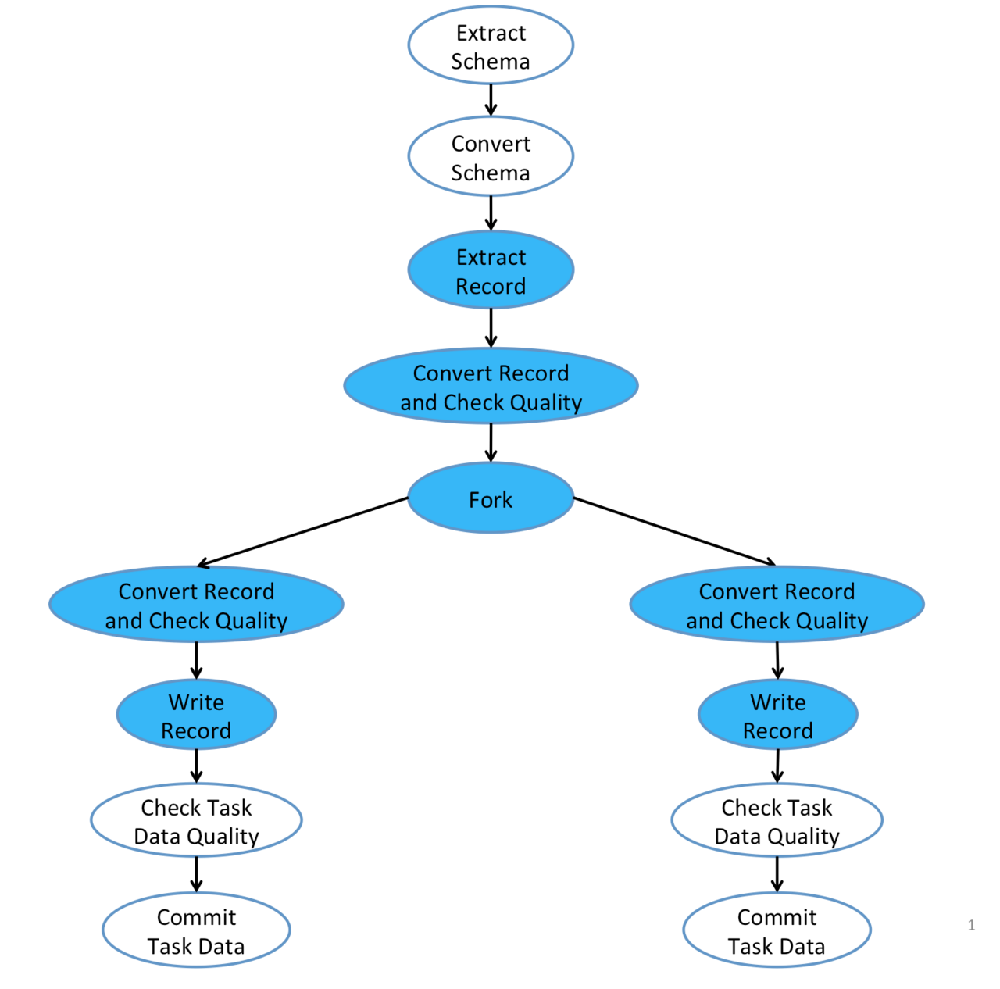

简介
Gobblin有两个重要的包即Gobblin-core和Gobblin-runtime, 前者实现了丰富的模块组件, 后者实现了完整的运行机制, 如此构成了Gobblin的高可扩展性的特点。
作为Gobblin的内核, Gobblin-runtime实现了Gobblin的工作流程和任务流程。本文名为Runtime初探, 主要研究目的就是通过Gobblin-runtime来了解Gobblin的运行逻辑, 便于后续对Gobblin的灵活开发。
在前文《Gobblin系列一之初探》中提到了Gobblin具有工作流和任务流的概念。那么本文就分为工作流和任务流两块来介绍。
工作流
所谓工作流就是指gobblin job从启动开始到结束这一个生命周期的工作流程。 这里引用《Gobblin系列一之初探》 的图示.
那么本节主要通过代码阅读来加深这一幅图。 工作流的代码主要集中在AbstractJobLauncher这个虚类中。它定义了启动和运行job的框架，它有两个子类为LocalJobLauncher和MRJobLauncher, 分别对应stanalone和mapreduce这两个运行模式。
工作流主要逻辑都在launchJob方法内
public void launchJob(JobListener jobListener) throws JobException {
// *** 省略代码
// 获取job锁
if (!tryLockJob()) {
this.eventSubmitter.submit(gobblin.metrics.event.EventNames.LOCK_IN_USE);
throw new JobException(String.format(
"Previous instance of job %s is still running, skipping this scheduled run", this.jobContext.getJobName()));
}
// *** 省略代码
// 根据配置文件内设置的Source获取WorkUnits, 这里注意source的getWorkunits方法
TimingEvent workUnitsCreationTimer =
this.eventSubmitter.getTimingEvent(TimingEventNames.LauncherTimings.WORK_UNITS_CREATION);
// Generate work units of the job from the source
Optional<List<WorkUnit>> workUnits = Optional.fromNullable(this.jobContext.getSource().getWorkunits(jobState));
workUnitsCreationTimer.stop();
// *** 省略代码
// 创建tasks
TimingEvent workUnitsPreparationTimer =
this.eventSubmitter.getTimingEvent(TimingEventNames.LauncherTimings.WORK_UNITS_PREPARATION);
prepareWorkUnits(JobLauncherUtils.flattenWorkUnits(workUnits.get()), jobState);
workUnitsPreparationTimer.stop();
// *** 省略代码
// 运行task
TimingEvent jobRunTimer = this.eventSubmitter.getTimingEvent(TimingEventNames.LauncherTimings.JOB_RUN);
// Start the job and wait for it to finish
runWorkUnits(workUnits.get());
jobRunTimer.stop();
// 如果取消了job则跳过后续的commit/publish 以及persist
if (jobState.getState() == JobState.RunningState.CANCELLED) {
LOG.info(String.format("Job %s has been cancelled, aborting now", jobId));
return;
}
// *** 省略代码
// 进行commit和publisher以及persist过程, 其中commit调用了JobContext的commit方法
TimingEvent jobCommitTimer = this.eventSubmitter.getTimingEvent(TimingEventNames.LauncherTimings.JOB_COMMIT);
this.jobContext.finalizeJobStateBeforeCommit();
this.jobContext.commit();
postProcessJobState(jobState);
jobCommitTimer.stop();
// *** 省略代码
// clean up
cleanupStagingData(jobState);
// 释放job锁
unlockJob();
}
以上就是gobblin的工作流的各阶段, 从设计上看, commit/publiser 和 persist与task任务的运行彻底分开来了。task只负责数据的转换, 不管数据的落地。
commit/publiser 和 persist
commit/publiser 和 persist是在JobContext的commit方法内实现的。
void commit() throws IOException {
// *** 省略代码
commitDataset(datasetState, closer.register(DataPublisher.getInstance(dataPublisherClass, datasetState)));
// *** 省略代码
persistDatasetState(datasetUrn, datasetState);
}
/**
* Commit the output data of a dataset.
*/
@SuppressWarnings("unchecked")
private void commitDataset(JobState.DatasetState datasetState, DataPublisher publisher) throws IOException {
try {
publisher.publish(datasetState.getTaskStates());
} catch (Throwable t) {
LOG.error("Failed to commit dataset", t);
setTaskFailureException(datasetState.getTaskStates(), t);
}
// Set the dataset state to COMMITTED upon successful commit
datasetState.setState(JobState.RunningState.COMMITTED);
}
/**
* Persist dataset state of a given dataset identified by the dataset URN.
*/
private void persistDatasetState(String datasetUrn, JobState.DatasetState datasetState) throws IOException {
LOG.info("Persisting dataset state for dataset " + datasetUrn);
this.datasetStateStore.persistDatasetState(datasetUrn, datasetState);
}
当然commit不会这么简单, Gobblin内有个publish策略,
- The JobCommitPolicy.COMMIT_ON_PARTIAL_SUCCESS policy 只要部分task成功.
- The JobCommitPolicy.COMMIT_SUCCESSFUL_TASKS policy .
- The JobCommitPolicy.COMMIT_ON_FULL_SUCCESS policy 所有task都成功.
需要满足以下条件才能进行commit
private boolean canCommitDataset(JobState.DatasetState datasetState) {
// Only commit a dataset if 1) COMMIT_ON_PARTIAL_SUCCESS is used, or 2)
// COMMIT_ON_FULL_SUCCESS is used and all of the tasks of the dataset have succeeded.
return this.jobCommitPolicy == JobCommitPolicy.COMMIT_ON_PARTIAL_SUCCESS
|| this.jobCommitPolicy == JobCommitPolicy.COMMIT_SUCCESSFUL_TASKS
|| (this.jobCommitPolicy == JobCommitPolicy.COMMIT_ON_FULL_SUCCESS
&& datasetState.getState() == JobState.RunningState.SUCCESSFUL);
}
至此已经简要介绍了Gobblin的工作流的源码。那么下一节将重点介绍Gobblin的任务流。
任务流
同样引用《Gobblin系列一之初探》中关于任务流的图示

我们先从上节的runWorkUnits(workUnits.get())method开始讲起。
public static List<Task> runWorkUnits(String jobId, List<WorkUnit> workUnits, TaskStateTracker stateTracker,
TaskExecutor taskExecutor, CountDownLatch countDownLatch) {
List<Task> tasks = Lists.newArrayList();
for (WorkUnit workUnit : workUnits) {
String taskId = workUnit.getProp(ConfigurationKeys.TASK_ID_KEY);
WorkUnitState workUnitState = new WorkUnitState(workUnit);
workUnitState.setId(taskId);
workUnitState.setProp(ConfigurationKeys.JOB_ID_KEY, jobId);
workUnitState.setProp(ConfigurationKeys.TASK_ID_KEY, taskId);
// Create a new task from the work unit and submit the task to run
Task task = new Task(new TaskContext(workUnitState), stateTracker, taskExecutor, Optional.of(countDownLatch));
stateTracker.registerNewTask(task);
tasks.add(task);
taskExecutor.execute(task);
}
new EventSubmitter.Builder(JobMetrics.get(jobId).getMetricContext(), "gobblin.runtime").build()
.submit(EventNames.TASKS_SUBMITTED, "tasksCount", Integer.toString(workUnits.size()));
return tasks;
}
Gobblin为每一个workunit启动了一个task，由此可见任务流运行在Task类中, 且主要逻辑在Task的run方法内。而跟任务流逻辑有关的又分为两个类即Task类和Fork类。Task相当于主线程, Fork相当于分支线程.
Task逻辑
public void run() {
// *** 省略代码
// 根据source的getExtractor获取每个workunit对应的extractor
extractor =
closer.register(new InstrumentedExtractorDecorator(this.taskState, this.taskContext.getExtractor()));
// 根据配置, 获取1个或者多个级连起来的converter
converter = closer.register(new MultiConverter(this.taskContext.getConverters()));
// 根据配置获取其他分支fork, 如果只有一个分支就为IdentityForkOperator
// Get the fork operator. By default IdentityForkOperator is used with a single branch.
ForkOperator forkOperator = closer.register(this.taskContext.getForkOperator());
// *** 省略代码
// 以一个record为最小单位处理数据, 首先经过MultiConverter的convertRecord, 然后进入processRecord过程
while ((record = extractor.readRecord(null)) != null) {
recordsPulled++;
for (Object convertedRecord : converter.convertRecord(schema, record, this.taskState)) {
processRecord(convertedRecord, forkOperator, rowChecker, rowResults, branches);
}
｝
// fork会等待main branch的任务完成
for (Optional<Fork> fork : this.forks) {
if (fork.isPresent()) {
// Tell the fork that the main branch is completed and no new incoming data records should be expected
fork.get().markParentTaskDone();
}
}
// 开始每一个fork 并行进行处理
for (Optional<Fork> fork : this.forks) {
if (fork.isPresent()) {
try {
this.forkCompletionService.take();
} catch (InterruptedException ie) {
Thread.currentThread().interrupt();
}
}
}
// 这里进行task level checker, 并进行commit
// Check if all forks succeeded
boolean allForksSucceeded = true;
for (Optional<Fork> fork : this.forks) {
if (fork.isPresent()) {
if (fork.get().isSucceeded()) {
if (!fork.get().commit()) {
allForksSucceeded = false;
}
} else {
allForksSucceeded = false;
}
}
}
// pulisher data。
if (shouldPublishDataInTask()) {
// If data should be published by the task, publish the data and set the task state to COMMITTED.
// Task data can only be published after all forks have been closed by closer.close().
publishTaskData();
this.taskState.setWorkingState(WorkUnitState.WorkingState.COMMITTED);
}
}
咦, 怎么在task里面也要进行publish？这是因为pulisher分为task-level和job－level。 上一节介绍的是job－leverl, 而本节讲到的是task-level. 如果设置了job-level publish那么这里就不会publish了。 两者的主要区别在于一个粗细精度的问题。
上面介绍任务流并没有完, 还没讲processRecord这个方法呢
private void processRecord(Object convertedRecord, ForkOperator forkOperator, RowLevelPolicyChecker rowChecker,
RowLevelPolicyCheckResults rowResults, int branches) throws Exception {
// 对每一条record进行row-level row checker
// Skip the record if quality checking fails
if (!rowChecker.executePolicies(convertedRecord, rowResults)) {
return;
}
// *** 省略代码
// Put the record into the record queue of each fork. A put may timeout and return a false, in which
// case the put needs to be retried in the next iteration along with other failed puts. This goes on
// until all puts succeed, at which point the task moves to the next record.
while (!allPutsSucceeded) {
allPutsSucceeded = true;
for (int i = 0; i < branches; i++) {
if (succeededPuts[i]) {
continue;
}
if (this.forks.get(i).isPresent() && forkedRecords.get(i)) {
boolean succeeded = this.forks.get(i).get()
.putRecord(convertedRecord instanceof Copyable ? ((Copyable) convertedRecord).copy() : convertedRecord);
succeededPuts[i] = succeeded;
if (!succeeded) {
allPutsSucceeded = false;
}
} else {
succeededPuts[i] = true;
}
}
}
从上面代码可以看出 processRecord主要处理以下几个逻辑。
- 对record进行task-level row checker, 失败就返回
- 对每一条数据进行copy,然后将record放入每一个fork的queue里面。由此可见, 要实现fork必须要实现copyable接口，每一个fork保存完整的一份数据在其queue里面。所以当数据量大时且fork多时很容易出现oom
- fork等待main branch运行且处理完所有数据后才运行. fork的运行是并行的。
- 在运行完fork后, task会对每一个fork分支进行task level checker, 如果通过则进行commit。
Fork 逻辑
在task中this.forkCompletionService.take()其实就是启动了fork线程的run方法。 Fork 的主要处理逻辑在Fork.processRecords方法内。
/**
* Get new records off the record queue and process them.
*/
private void processRecords() throws IOException, DataConversionException {
while (true) {
try {
// 从Fork的queue中一条一条的获取record
Object record = this.recordQueue.get();
if (record == null) {
// The parent task has already done pulling records so no new record means this fork is done
if (this.parentTaskDone) {
return;
}
} else {
// 如果没有创建writer则创建，一般情况下创建的是PartitionedDataWriter, 关于PartitionedDataWriter将在下一篇文章中介绍。
buildWriterIfNotPresent();
// Convert the record, check its data quality, and finally write it out if quality checking passes.
// 对一个或者多个covert进行级连处理
for (Object convertedRecord : this.converter.convertRecord(this.convertedSchema, record, this.taskState)) {
// 进行row-level的checker, 如果没有错误则进行writer
if (this.rowLevelPolicyChecker.executePolicies(convertedRecord, this.rowLevelPolicyCheckingResult)) {
this.writer.get().write(convertedRecord);
}
}
}
} catch (InterruptedException ie) {
this.logger.warn("Interrupted while trying to get a record off the queue", ie);
Throwables.propagate(ie);
}
}
Fork processRecords 的处理逻辑跟Task的 processRecords 类似, 只是多了writer, 关于writer的部分将在下一篇文章中介绍。
至此，关于fork的处理逻辑也结束了。这里需要注意一点的是，由于coverter和rowLevelPolicyChecker都是支持多个级连的，所以在实现过程中分别采用了mutilCoverter这个chain的方法和for循环的方法.
mutilCoverter
@Override
public Iterable<Object> convertRecord(Object outputSchema, final Object inputRecord, final WorkUnitState workUnit)
throws DataConversionException {
if (this.convertedSchemaMap.size() != this.converters.size()) {
throw new RuntimeException("convertRecord should be called only after convertSchema is called");
}
return new Iterable<Object>() {
@Override
public Iterator<Object> iterator() {
try {
return new MultiConverterIterator(inputRecord, workUnit);
} catch (DataConversionException dce) {
throw new RuntimeException(dce);
}
}
};
}
public MultiConverterIterator(Object inputRecord, WorkUnitState workUnitState) throws DataConversionException {
this.workUnitState = workUnitState;
this.chainedConverterIterator =
new ChainedConverterIterator(new SingleRecordIterable<Object>(inputRecord).iterator(), converters.isEmpty()
? new IdentityConverter() : converters.get(0));
for (int i = 1; i < converters.size(); i++) {
this.chainedConverterIterator =
new ChainedConverterIterator(this.chainedConverterIterator, converters.get(i));
}
}
rowLevelPolicyChecker
public boolean executePolicies(Object record, RowLevelPolicyCheckResults results) throws IOException {
for (RowLevelPolicy p : this.list) {
RowLevelPolicy.Result result = p.executePolicy(record);
results.put(p, result);
if (result.equals(RowLevelPolicy.Result.FAILED)) {
if (p.getType().equals(RowLevelPolicy.Type.FAIL)) {
throw new RuntimeException("RowLevelPolicy " + p + " failed on record " + record);
} else if (p.getType().equals(RowLevelPolicy.Type.ERR_FILE)) {
if (!errFileOpen) {
this.writer.open(getErrFilePath(p));
this.writer.write(record);
} else {
this.writer.write(record);
}
errFileOpen = true;
}
return false;
}
}
return true;
}
总结
本文简单的通过源码来分析gobblin-runtime是如何完成工作流和任务流的. 主要涉及到3个类, AbstractJobLauncher, Task， Fork. 其中关于更细的Source, Extractor，Coverter, Writer, DataPublisher 将在后面文章中分别介绍。
最后用一副我画的图来总结下全文吧.
本文完
- 原创文章，转载请注明： 转载自Lamborryan，作者：Ruan Chengfeng
- 本文链接地址：http://lamborryan.github.io/gobblin-state
- 本文基于署名2.5中国大陆许可协议发布，欢迎转载、演绎或用于商业目的，但是必须保留本文署名和文章链接。 如您有任何疑问或者授权方面的协商，请邮件联系我。